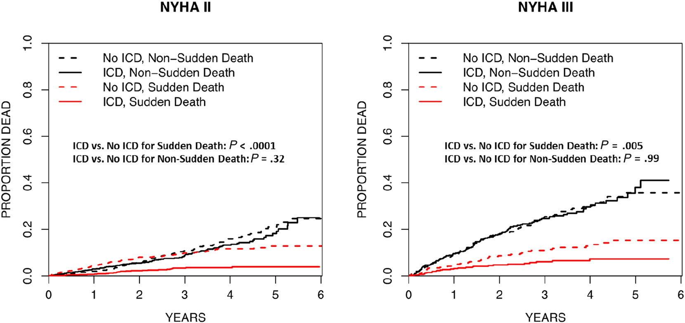

2 most predictive RISKS for SCA are
LVEF and NYHA.


Non-CAD causes of SCA
blank
Channelopathy
blank
blank
blank
Arrhythmogenic Right Ventricular Dysplasia (ARVD)
Coronary Anomalies
Blank
Myocarditis/Dilated Cardiomyopathy
Hypertrophic Cardiomyopathy